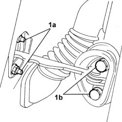
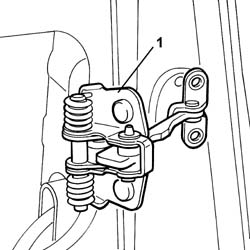

7005A28 FRONT SIDE DOOR LIMITER- REPAIR OR REPLACE
- Path
- Procedures > 70 FITTINGS > 7005 PASSENGER COMPARTMENT FRONT SIDE DOORS > 7005A LOCATION OF FRONT DOOR WIND NOISES > 7005A28 FRONT SIDE DOOR LIMITER- REPAIR OR REPLACE
- Kind
- repair procedure (removal / refitting; the operation number is the code)
- Applies to
- all engines; all production periods
- Interactive page
- https://sloeber94.github.io/elrnDB-fUlss/en/#/179007653
Applies to: all engines; all production periods
 Removing
Removing
 Refitting
RefittingOp. 5530B56 BATTERY DRIP TRAY COVER - R.R.
- Disconnect the negative battery terminal.
Op. 7040E24 LOWER COURTESY LIGHT INDOOR PANEL - R+R
Op. 7005E10 FRONT SIDE DOOR INNER PANEL - R R FOR REPLACEMENT
Op. 7005A06 FRONT SIDE DOOR LOWER WATER PROTECTION - R.R. OR POSITION WITH PANEL REMOVED
1. Undo the bolts fixing the check strap to the bodyshell pillar (1a) and undo the nuts fixing the check strap to the front side door (1b).

Applies to: all engines; all production periods
- Remove the front side door check strap.

Applies to: all engines; all production periods
Refitting
Removing- Fit the front side door check strap.
- Tighten the nuts fixing the check strap to the front side door to torque.
- Tighten the bolts fixing the check strap to the bodyshell pillar.
Op. 7005A06 FRONT SIDE DOOR LOWER WATER PROTECTION - R.R. OR POSITION WITH PANEL REMOVED
Op. 7005E10 FRONT SIDE DOOR INNER PANEL - R R FOR REPLACEMENT
Op. 7040E24 LOWER COURTESY LIGHT INDOOR PANEL - R+R
- Connect the negative battery terminal.
Topics linked from this page (5)
- 5530B56 BATTERY DRIP TRAY COVER - R.R.
- 7005A06 FRONT SIDE DOOR LOWER WATER PROTECTION - R.R. OR POSITION WITH PANEL REMOVED
- 7005E10 FRONT SIDE DOOR INNER PANEL - R R FOR REPLACEMENT
- 7005M14 SWITCH UNIT CONTROLLING ELECTRIC WINDOWS REAR VIEW MIRRORS AND DOOR LOCK ON DRIVERS SIDE FRONT DOOR R R
- 7040E24 LOWER COURTESY LIGHT INDOOR PANEL - R+R